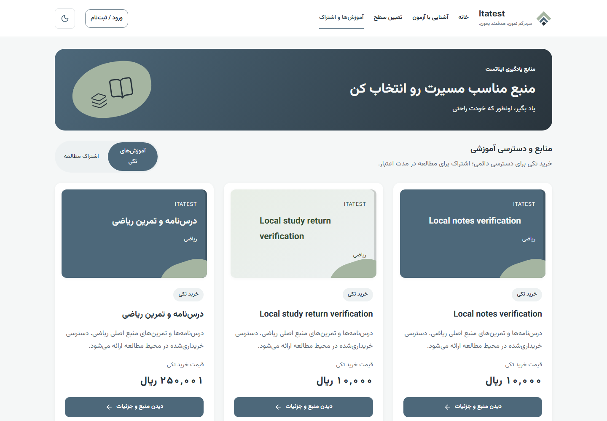
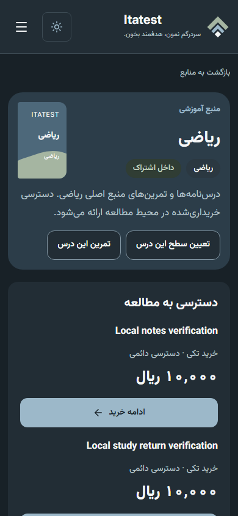
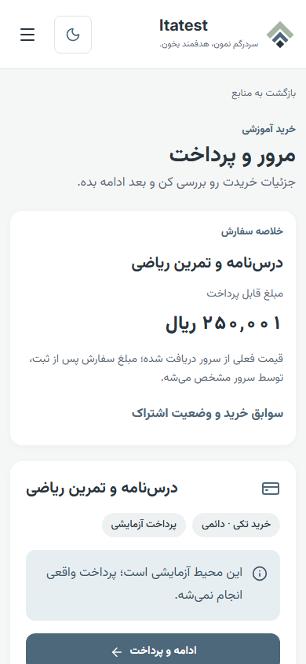
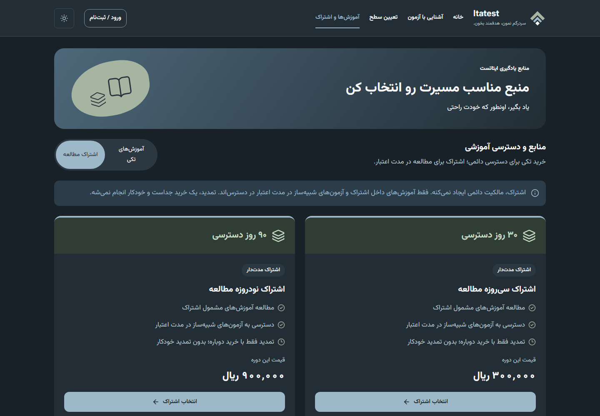
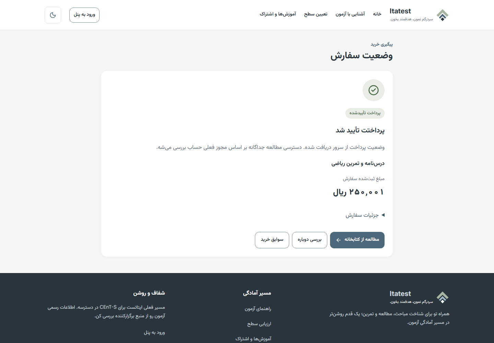
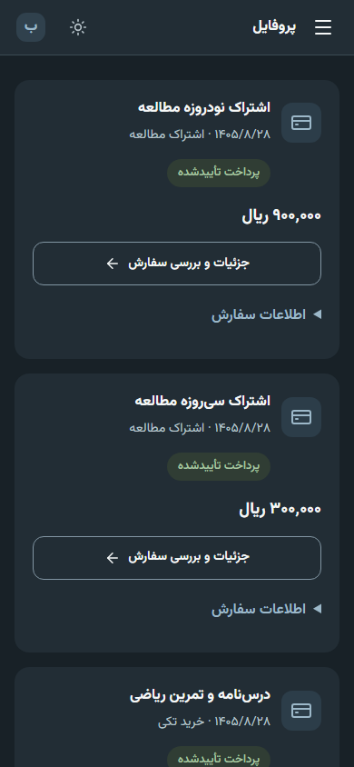
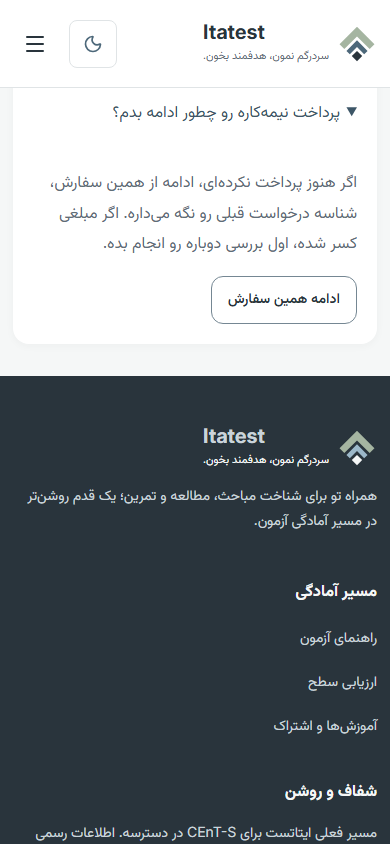

Phase 7 — Commerce
Seven AFTER-only viewport images for visual review. Catalog products and orders come from an isolated local preview with disposable fixtures. Confirmation uses actual DEVELOPMENT_MOCK completion. Pending recovery is explicitly injected. Fixture prices and earlier technical fixture titles are not production offers. No real payment or production data.
English report · Evidence and reproduction · Phase 7A API handoff

Catalog · Light · 1440 × 1000Actual active local products, including earlier regression fixtures. Decorative covers request no protected pages.

Resource detail · Dark · 390 × 844Real curriculum metadata and available offers. Multiple products may refer to the same training.

Checkout · Light · 390 × 844Exact rial amount, permanent purchase label and clear mock-environment notice. Only identifiers are submitted.

Subscriptions · Dark · 1440 × 1000Actual 30/90-day fixture products; time-limited access with no automatic billing.

Confirmed mock payment · Light · 1440 × 1000Actual server-confirmed order followed by refreshed current library permission. Redirect flags do not establish success.

Owner orders · Dark · 390 × 844Scrolled viewport showing actual owner orders. Current and upcoming subscription periods are separately checked.

Pending recovery · Light · 390 × 844Injected PENDING history and paid:false verification. Scrolled to the expanded same-order continuation; no definitive failure or new purchase is inferred.
Phase 7 awaits visual review. Phase 8 administration has not started. No commit, push or deployment.